Part 0: Calibrating Your Camera and Capturing a 3D Scan
.
Part 0.1: Calibrating My Camera
To estimate the intrinsic parameters of my phone camera, I first captured 50 images of printed ArUco tags (4×4 dictionary) from different viewpoints. The focal length was kept fixed (zoom = 1.0).
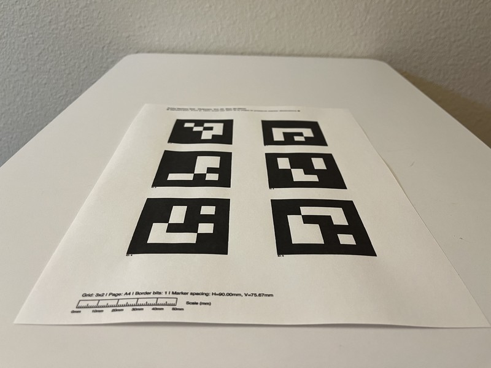
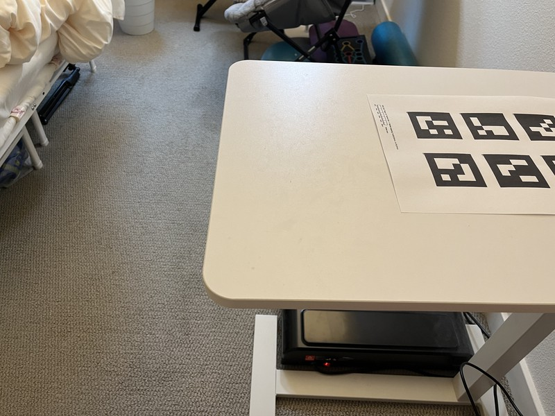
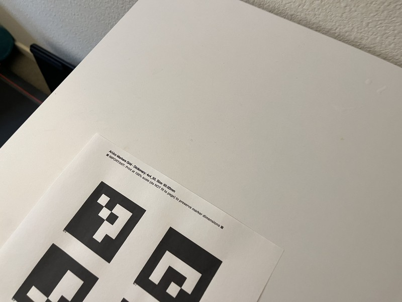
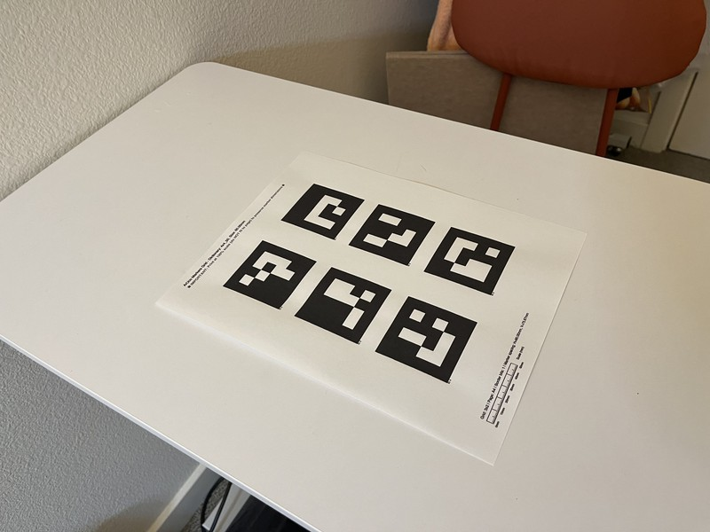
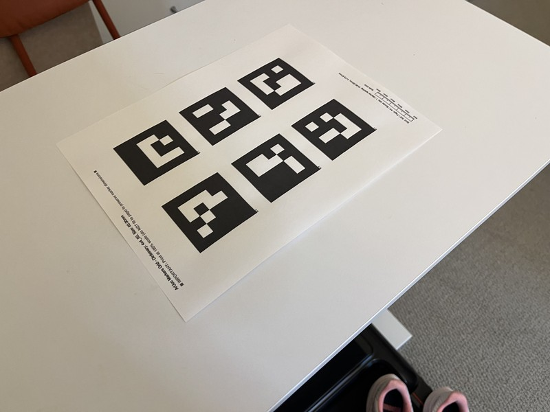
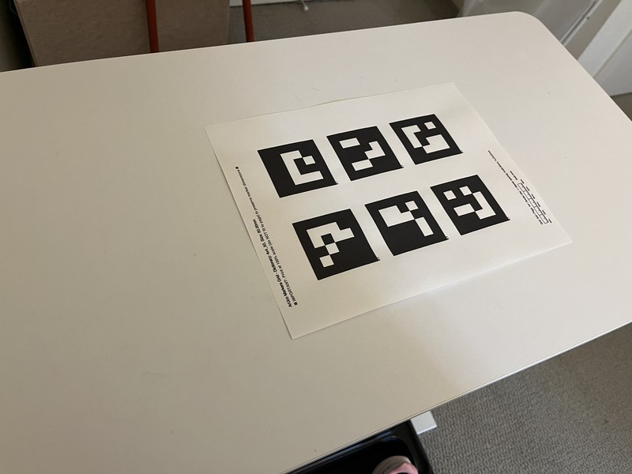
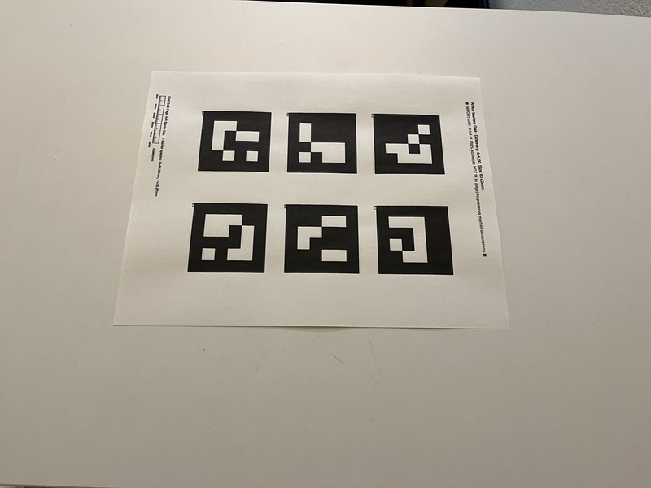
For each tag, I defined a local 3D coordinate system on the tag plane to get the coordinates in the real world (objpoints). I iterated over all calibration images and uses OpenCV’s ArUco detector, and found the 2D uv pixels (imgpoints) of all the detected ArUco tags. Images where no markers are detected are skipped. Once the matching objpoints and imgpoints are collected, I used cv2.calibrateCamera() to calculate the intrinsics matrix K and the distortion coefficients d, calculated as:
$$
K =
\begin{bmatrix}
649.0065172 & 0 & 407.33495294 \\
0 & 646.83469996 & 290.66436024 \\
0 & 0 & 1
\end{bmatrix}
$$
$$
\mathbf{d} =
\begin{bmatrix}
-0.16860768 &
1.00162078 &
-0.00521381 &
0.006493 &
-1.91354924
\end{bmatrix}
$$
.
.
Part 0.2: Capturing a 3D Object Scan
I 50 took photos of my little friend (who was also in the dolly zoom project) with an ArUco tag:
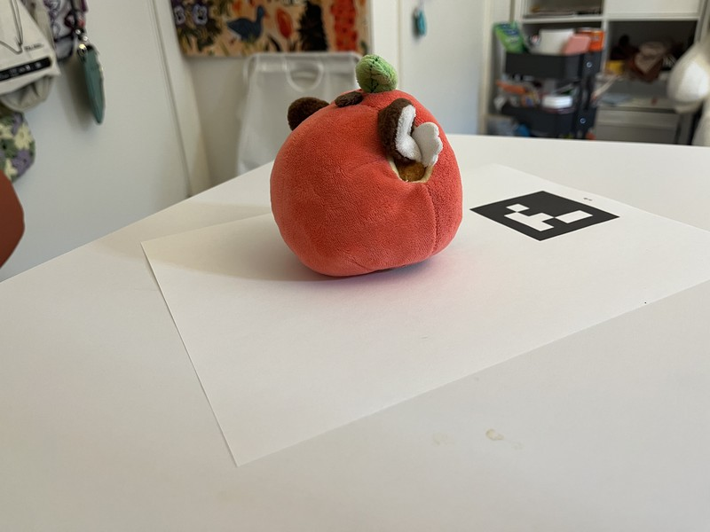
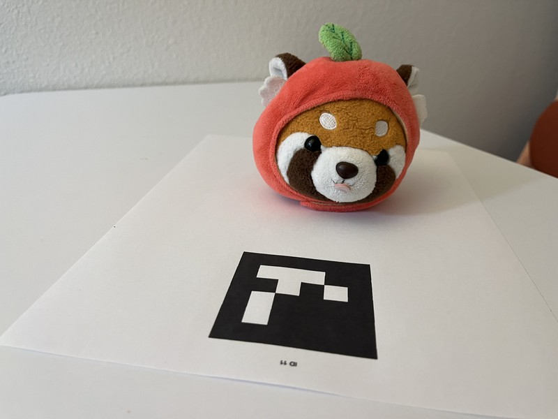
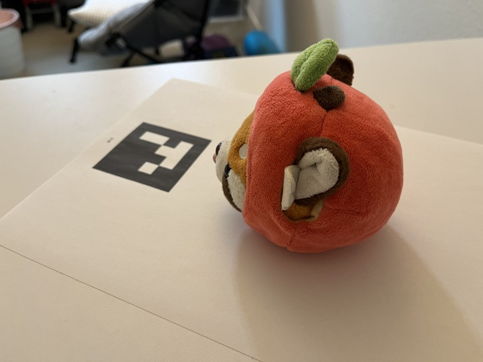
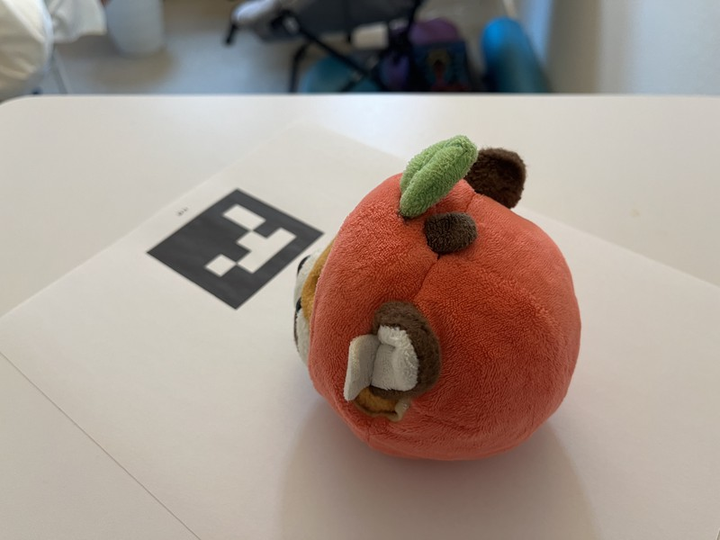
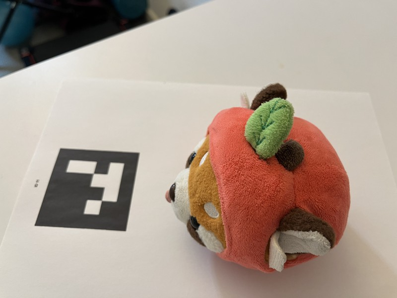
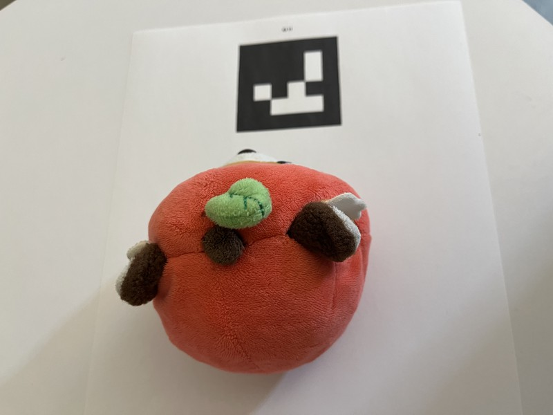
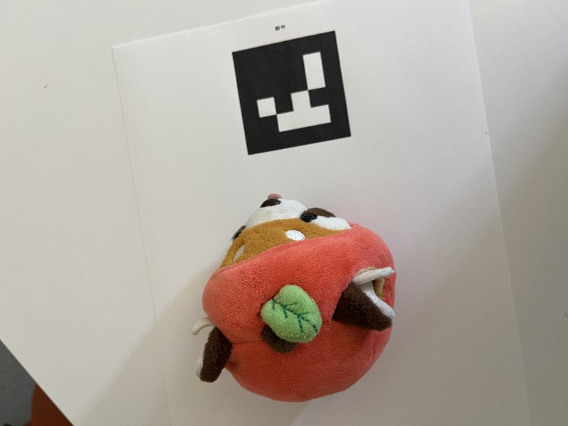
.
.
Part 0.3: Estimating Camera Pose
I estimate the camera pose (rotation and translation) for each image of the scanned object using the ArUco tag and OpenCV’s cv2.solvePnP(). For each input image, I first detect the single ArUco tag; if a tag is found, I collect both the objpoints and the imgpoints, to serve as inputs along with K and d for the PnP function. After solving the extrinsics of all the images, the camera frustums’ poses and images are shown as follows:
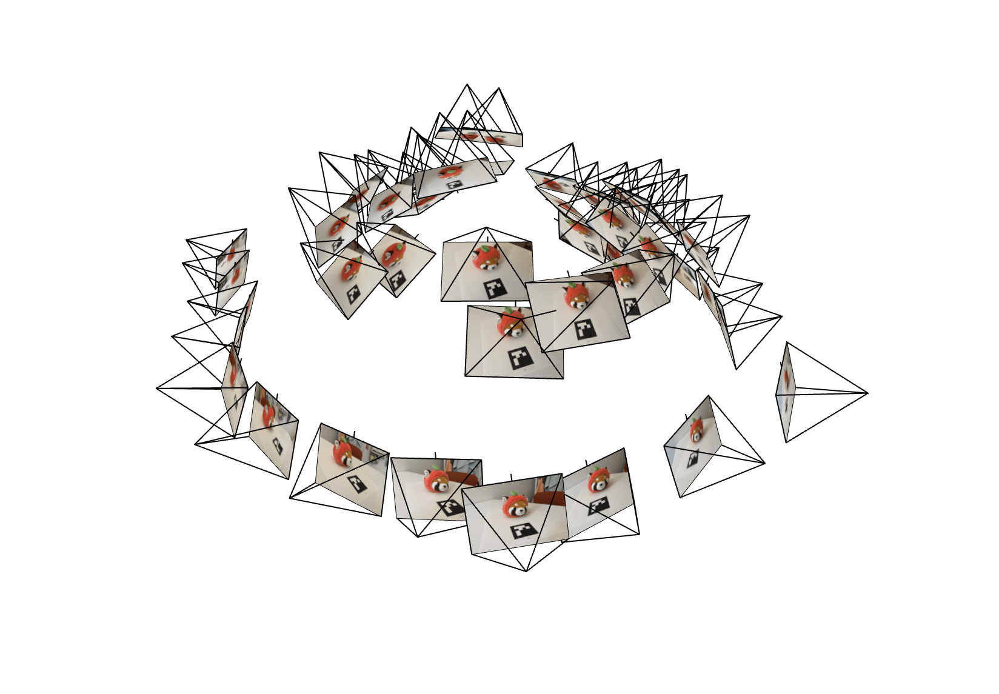
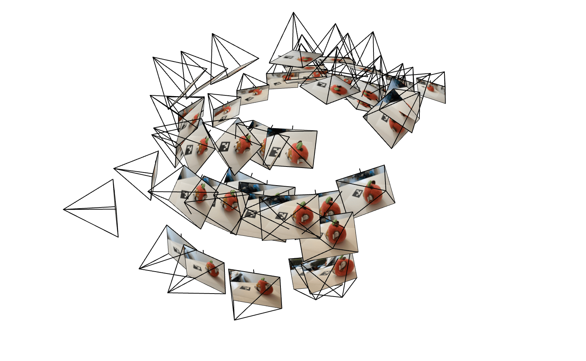
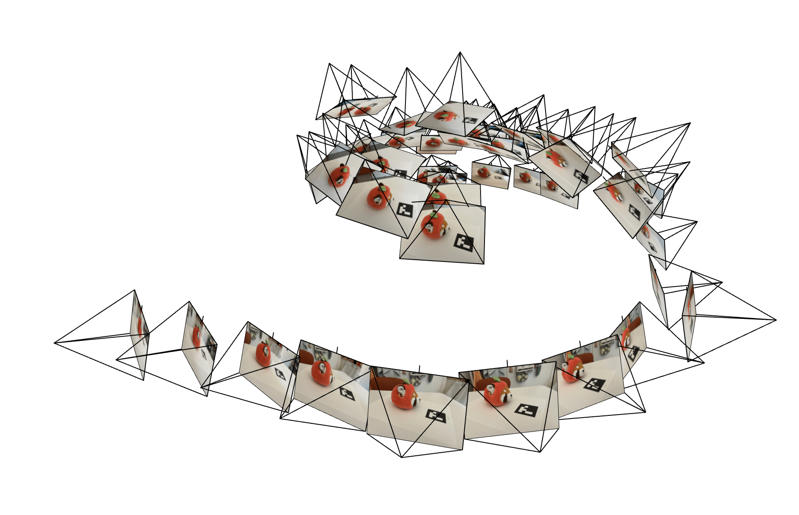
.
.
Part 0.4: Undistorting images and creating a dataset
I randomly split the valid views into a training set (about \(N_{\text{train}} \approx 0.9N \)) and a validation set (the remaining \(N_{\text{val}} = N - N_{\text{train}} \)). For each selected image, I first undistort it using the calibrated intrinsics K and distortion coefficients d, then store the undistorted images and their corresponding camera-to-world matrices for late NeRF training.
.
.
Part 1: Fit a Neural Field to a 2D Image
.
Model Architecture & Positional Encoding
I use a small MLP with sinusoidal positional encoding to map 2D pixel coordinates \( x \in \mathbb{R}^2\) to RGB colors. The positional encoding expands the input as:
$$
\mathrm{PE}(x)
= \big[x,\, \sin(2^{0}\pi x),\, \cos(2^{0}\pi x),\, \ldots,\,
\sin(2^{L-1}\pi x),\, \cos(2^{L-1}\pi x)\big].
$$
with L=10, giving a 42-D feature vector. This is then fed into a 4-layer MLP with 256 hidden units and ReLU activations, followed by a final sigmoid layer to produce 3-channel RGB values in the range (0,1).
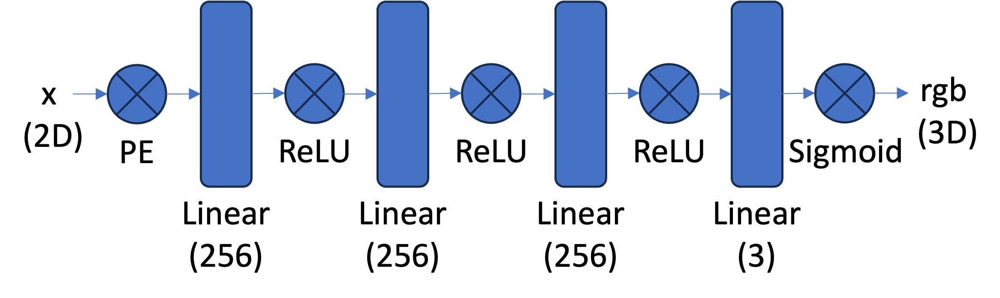
I train the 2D NeRF network using mean squared error (MSE) loss between the predicted and ground-truth RGB colors, optimized with Adam (learning rate \(1\times10^{-2}\)). At each iteration, I sample N=10,000 pixels, run a forward pass, backpropagate the MSE loss, and update the MLP weights. To monitor reconstruction quality, I convert the MSE to the peak signal-to-noise ratio (PSNR):
$$
\mathrm{PSNR} = 10 \cdot \log_{10}\left(\frac{1}{\mathrm{MSE}}\right)
$$
.
Data Loader
To build each mini-batch, I conceptually flatten the \(H \times W\) image into a 1D array of \(H\! \cdot\! W \) pixels and randomly sample N indices from \(\{0,\dots,H\! \cdot\! W-1\}\). For each sampled index idx, I recover its 2D location (ys, xs) with the following code:
def data_loader(img, N): h,w = img.shape[:2] # generate random coords idx = np.random.choice(h * w, size=N, replace=True) ys = idx // w xs = idx % w input_coords = np.stack([ys/h, xs/w], axis = 0).T # find colors output_colors = img[ys, xs] # turn to tensors input_coords = torch.from_numpy(input_coords).float() output_colors = torch.from_numpy(output_colors).float() return input_coords, output_colorsThe dataloader returns an input matrix \(\mathbf{X} \in \mathbb{R}^{N \times 2}\) of normalized pixel coordinates, and a target matrix \(\mathbf{Y} \in \mathbb{R}^{N \times 3}\) containing the corresponding RGB colors of those pixels.
.
Training Results
I trained 1000 iterations for each image. As for both the fox image and the cat meme, at the very early iterations, the network only recovers a smooth, almost uniform color field with visible grid-like artifacts. By iteration ~50, the rough pattern of the animal starts to appear, and by iteration ~140 the face and background are clearly recognizable, though still blurry. As training continues to 1000 iterations, the model gradually sharpens edges and refines high-frequency details, producing a close reconstruction of the original image.
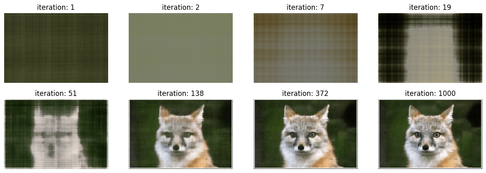
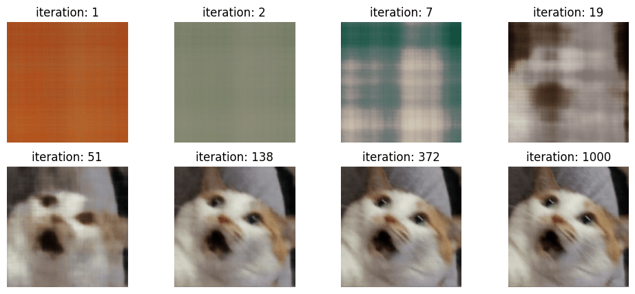
Below shows the PSNR curve for training on the cat meme. Although the curve fluctuates a lot during the training process, the final PSNR reached over 35, showing great image reconstruction results.
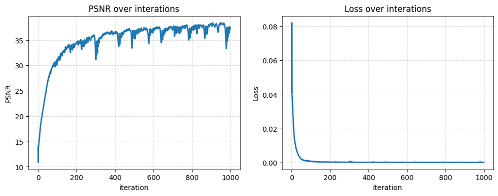
.
Hyperparameter Tuning
I vary both the maximum positional encoding frequency L and the MLP width (number of hidden channels). With a high frequency L = 10 and wide network (width = 256), the model recovers sharp edges and fine textures. Reducing the width = 32 with the same L = 10 keeps most structures but introduces noise and blurring. When I lower the frequency to L = 2, the network can only represent very smooth, low-frequency content: the reconstructions become over-smoothed and almost piecewise planar, and this effect is even stronger when the width is also reduced to 32. The same trend appears for both the fox and cat images.
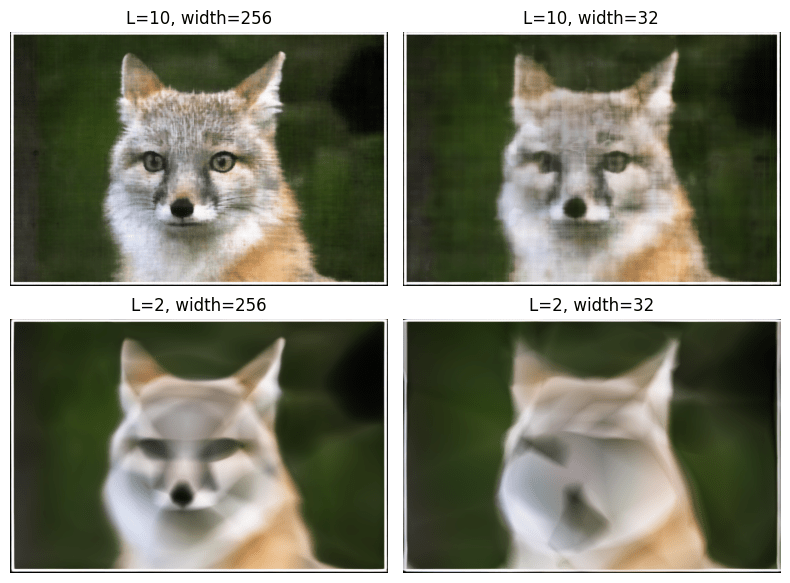
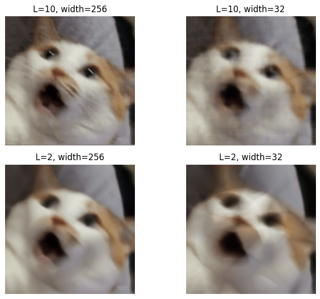
.
.
Part 2: Fit a Neural Radiance Field from Multi-view Images
.
Part 2.1: Create Rays from Cameras
Camera to World Coordinate Conversion
To convert 3D points from camera space to world space, I implement a transform(c2w, x_c) function. For each camera-space point \(\mathbf{x}_c \in \mathbb{R}^3\), I first form the homogeneous vector \(\tilde{\mathbf{x}}_c = [\mathbf{x}_c^\top, 1]^\top\) and then apply the camera-to-world matrix \( \mathrm{c2w} \in \mathbb{R}^{4\times 4}\):
$$
\tilde{\mathbf{x}}_w = \mathrm{c2w}\,\tilde{\mathbf{x}}_c,
\qquad
\mathbf{x}_w = \frac{\tilde{\mathbf{x}}_w[0:3]}{\tilde{\mathbf{x}}_w[3]}.
$$
.
Pixel to Camera Coordinate Conversion
To map pixel coordinates back to camera space, I invert the pinhole projection to create a function pixel_to_camera(K, uv, s). Given normalized pixel coordinates \((u, v)\), depth \(s = z_c\), and the intrinsic matrix K, I first form the homogeneous pixel vector \(\tilde{\mathbf{u}} = [u, v, 1]^\top\) and solve:
$$
\mathbf{x}_c = s K^{-1} \tilde{\mathbf{u}}
= s
\begin{bmatrix}
x_c \\
y_c \\
z_c
\end{bmatrix}.
$$
Pixel to Ray
Given the camera intrinsics K, a camera-to-world matrix c2w, and a set of pixel coordinates uv, I implemented the function pixel_to_ray that converts each pixel into a 3D ray in world space. I first assume a unit depth s = 1 and use pixel_to_camera to back-project each pixel (u, v) into camera coordinates, then apply transform to map these points into world coordinates \(\mathbf{X}_w\). The ray origin \(\mathbf{r}_o\) is taken from the translation part of c2w (the camera center), and the ray direction \(\mathbf{r}_d\) is obtained by normalizing \(\mathbf{X}_w - \mathbf{r}_o\).
def pixel_to_ray(K, c2w, uv): N = uv.shape[0] device, dtype = uv.device, uv.dtype # s = 1 s = torch.ones((N, 1), device=device, dtype=dtype) # camera coords to world coords x_c = pixel_to_camera(K, uv, s) # (N,3) x_w = transform(c2w, x_c) # (N,3) # ray origin from c2w if c2w.dim() == 2: # (4,4) ray_o = c2w[:3, 3].unsqueeze(0).expand(N, -1) # (N,3) else: # (N,4,4) ray_o = c2w[:, :3, 3] # (N,3) # normalized ray direction ray_d = F.normalize(x_w - ray_o, dim=-1) # (N,3) return ray_o, ray_d.
Part 2.2: Sampling
Sampling Rays from Images
To train the 3D NeRF, I sample rays directly from all training images. I first flatten the entire dataset of size (num_images, H, W) into a 1D list of total = num_images·H·W pixels, randomly pick N linear indices, and decode each index into an image id and a pixel location (x, y). After shifting to pixel centers by adding 0.5 to the coordinates, I use the corresponding camera pose c2w and the shared intrinsics K in pixel_to_ray to compute the ray origins and directions, and I use the RGB value at (x, y) as the supervision color for each ray.
def sample_rays(self, random=True, N=1000):
H, W, C = self.H, self.W, 3
total = self.count * H * W
device = self.images.device
# choose indices
idx = torch.randint(0, total, (N,), device=device)
img_ids = idx // (H * W)
pix_ids = idx % (H * W)
ys = self.ys_flat[pix_ids] # (N,)
xs = self.xs_flat[pix_ids] # (N,)
# + 0.5 pixel center
uvs = torch.stack([xs.float() + 0.5, ys.float() + 0.5], dim=-1) # (N,2)
c2w_curr = self.c2w[img_ids] # (N,4,4)
ray_o, ray_d = pixel_to_ray(self.K, c2w_curr, uvs) # (N,3),(N,3)
pixels = self.images[img_ids, ys, xs, :] # (N,3), in [0,1]
return ray_o, ray_d, pixels.
Sampling Points along Rays
For each ray, I discretize the continuous segment between a near and far bound (\(t \in [2.0, 6.0]\)) into nsamples=64 bins. I first build bin edges, then either take the midpoint of each bin (no perturbation) or add uniform random noise inside each bin during training (stratified sampling), so that different points along the ray are visited over time. The 3D sample positions are computed as
$$
\mathbf{x}(t) = \mathbf{r}_o + t\,\mathbf{r}_d,
$$
and I also keep the per-sample interval length Δt (stored in deltas) for volume rendering later.
def sample_along_rays(ray_o,ray_d, perturb, n_samples = 64, near = 2.0, far = 6.0): device, dtype = ray_o.device, ray_o.dtype B = ray_o.shape[0] ray_d = F.normalize(ray_d, dim=-1) # normalize directions # record delta t_edges = torch.linspace(near, far, n_samples + 1, device=device, dtype=dtype) # (N+1,) deltas_1d = (t_edges[1:] - t_edges[:-1]) # (N,) # get the points if perturb: t = t_edges[:-1][None, :] + torch.rand(B, n_samples, device=device, dtype=dtype) * deltas_1d[None, :] else: t = 0.5 * (t_edges[:-1] + t_edges[1:])[None, :].expand(B, n_samples) # (B,N) deltas = deltas_1d[None, :, None].expand(B, n_samples, 1) # (B,N,1) points = ray_o[:, None, :] + t[:, :, None] * ray_d[:, None, :] # (B,N,3) return points, deltas.
Part 2.3: Putting the Dataloading All Together
I wrap the multiview images and camera parameters in a RaysData dataset. In the constructor, I move the RGB images, intrinsics K, and camera-to-world matrices c2w to a chosen device (“cuda” on google colab) and normalize all pixel values to [0, 1]. I then precompute the integer pixel grid (x, y) for each image using torch.meshgrid, flatten it into a list of 2D coordinates uvs, and flatten the images into a matching list of RGB colors pixels.
Then I used viser to visualize the rays and sampled points. The first image randomly shows 100 rays, and the second & third images show 100 rays coming from a single image.
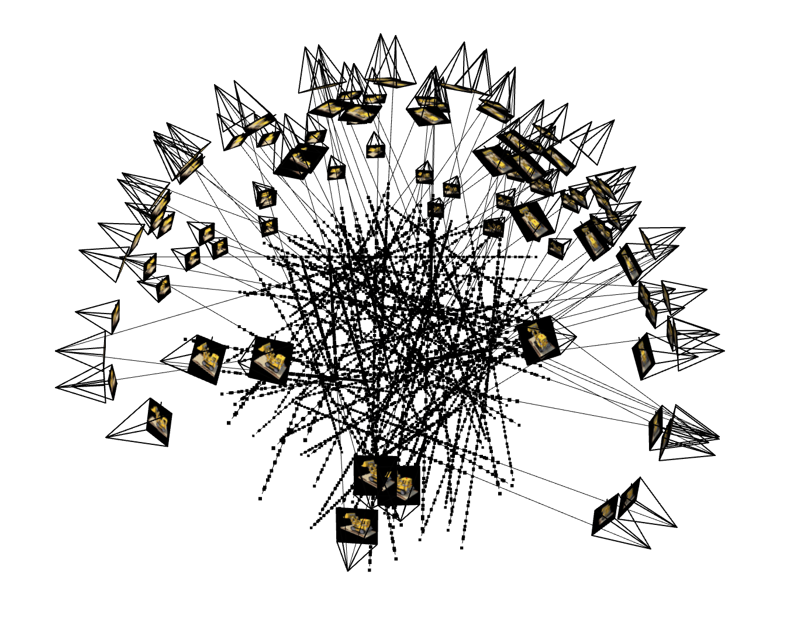
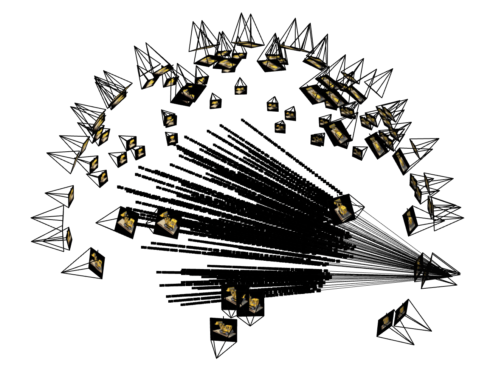
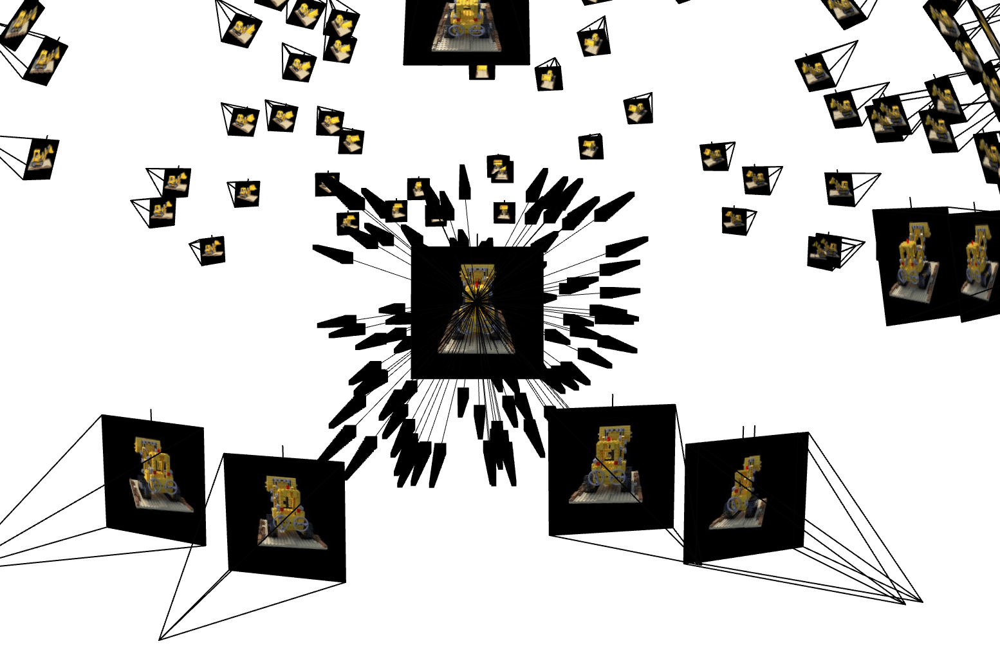
.
.
Part 2.4: Neural Radiance Field
I implemented a 3D NeRF-style MLP that takes as input a 3D position x and a view direction d. Both are first encoded with sinusoidal positional encodings (with \(L_x = 10\) for positions and \(L_d = 4\) for directions). The encoded position passes through several ReLU layers, with a skip connection that concatenates the original encoding back into the middle of the network. I applied the given Neural Network Structure:
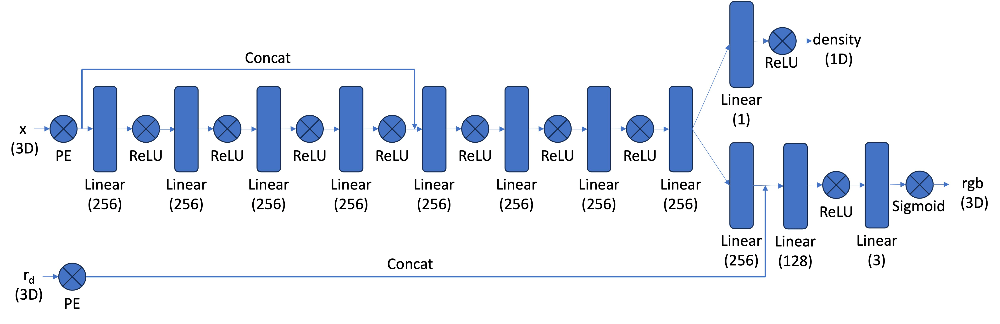
From this shared feature, one head predicts the density \(\sigma(\mathbf{x}) \ge 0\) using a ReLU output, and another head conditions on the encoded view direction to predict the color \(\mathbf{c}(\mathbf{x},\mathbf{d}) \in (0,1)^3\) using a final sigmoid. Overall, the network realizes:
$$
F_\theta(\mathbf{x}, \mathbf{d}) = \big(\mathbf{c}(\mathbf{x},\mathbf{d}),\, \sigma(\mathbf{x})\big)
$$
.
.
Part 2.5: Volume Rendering
Given per-sample density \( \sigma_i \), color \(\mathbf{c}_i\), and interval length \(\delta_i\) along each ray, the function volrend first converts densities to opacities:
$$
\alpha_i = 1 – \exp(-\sigma_i \delta_i)
$$
then computes the accumulated transmittance \(T_i\) by multiplying the “not yet terminated” probabilities along the ray. The final pixel color is obtained as a weighted sum:
$$
\hat{\mathbf{C}}(\mathbf{r}) = \sum_{i=1}^N T_i\,\alpha_i\,\mathbf{c}_i
$$
where the weights \(w_i = T_i \alpha_i\) are implemented in code as weights = T * alpha before summing over all samples.
.
.
Training Results
I train the NeRF model using all training views wrapped in a RaysData dataset.
I use 4000 optimization iterations, sampling 10,000 rays per iteration and 64 points per ray between near and far bounds of 2.0 and 6.0. The NeRF network has width 256 with positional encoding levels 10 for 3D points and 4 for view directions. I optimize with Adam using a learning rate of 5×10−4.
Below (left) shows the Validation PSNR Curve, which reaches ~26 after 4000 iterations. The training loss (right) curve goes down rapidly at the beginning and became stable in later stage of training.
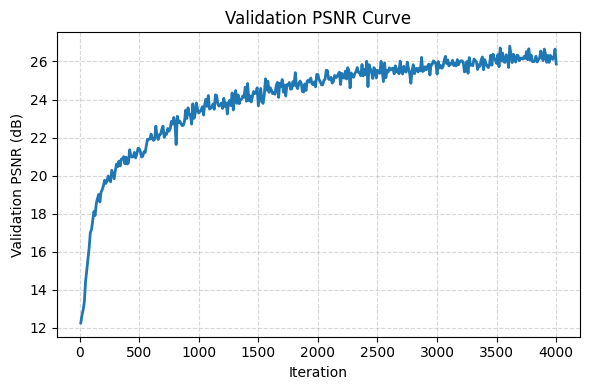
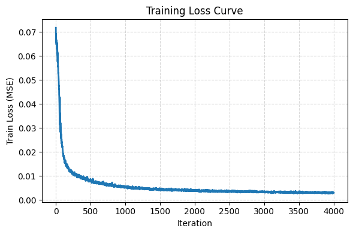
Here is how it looks like during the training process. At iteration 100, the image is still blurry; when it reaches 500 iteration, the overall shape of the Lego appears; as the training continues, the model is learning more high-frequency details and returns a good reconstruction of the image.
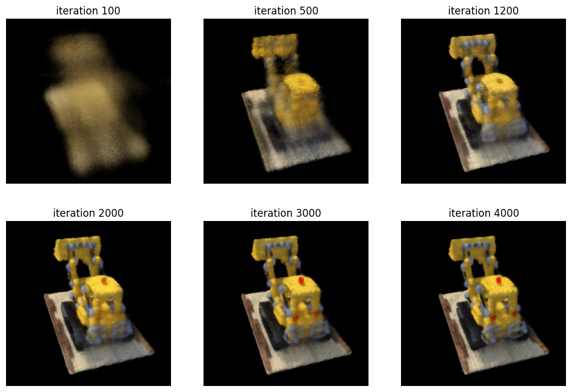
Here are the spherical renderings video of the Lego. To prove that the model is working properly, I rendered around multiple rotational axis:
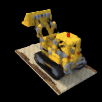
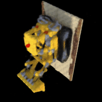
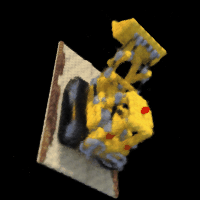
.
.
Part 2.6: Training with your own data
Here is a GIF of camera circling my object showing novel views:
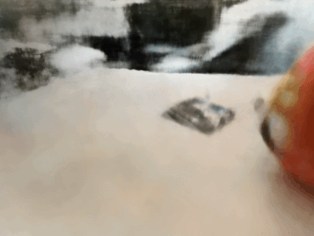
Here is the training loss and the train PSNR curve. The final loss gets very low, and the train PSNR curve reaches 23. However, the model have problems with over fitting, so it may produce some inaccurate effects in image reconstruction.
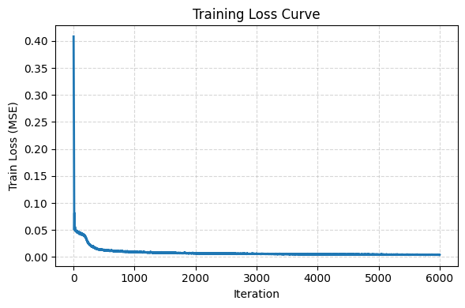
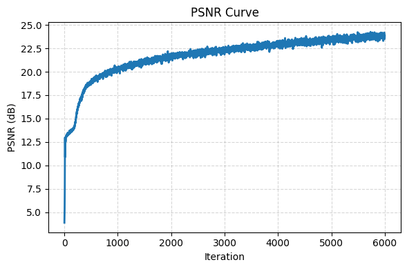
Hyperparameter Changes
I experimented with different near–far bounds for volume rendering. Using near=2.0, far=6.0 produced very “messy” reconstructions with lots of floating artifacts in front of the object.
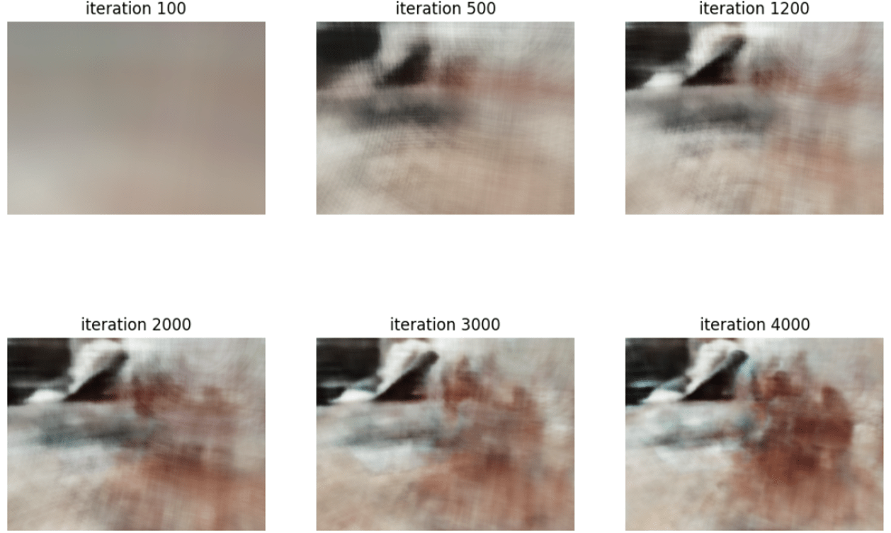
Expanding the range to near=0.04, far=6.0 removed some artifacts but made the result overly blurred, since many samples were wasted on empty space far from the object:
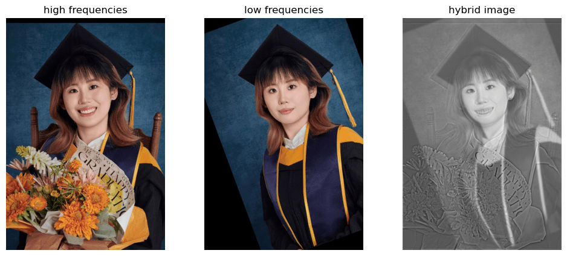
I finally obtained the best trade-off with near=0.04, far=1.0, and increased the training schedule from 4000 to 6000 iterations to allow the model to fully converge under this tighter depth range. Here is the intermediate renders of the scene during training in the final model:
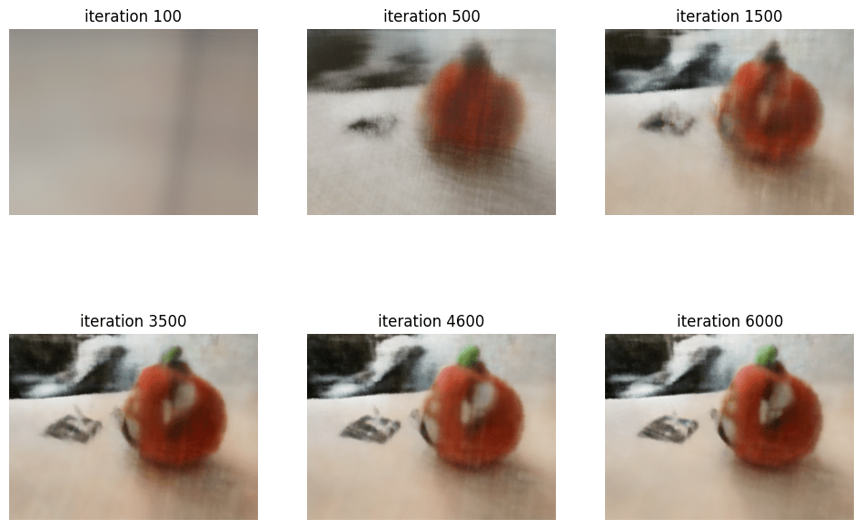
.
.
Bells & Whistles
To render a depth map from a given camera pose, I reuse the NeRF volume-rendering weights but replace colors with per-sample depths. For each pixel, I cast a ray, sample 3D points between the near and far bounds, and run the NeRF to obtain densities \(\sigma_i\). These are converted to opacities \(\alpha_i\) and accumulated transmittance \(T_i\), giving weights \(w_i = T_i \alpha_i\). Instead of compositing RGB, I compute the Euclidean depth \(d_i = \lVert \mathbf{x}_i - \mathbf{r}_o \rVert_2\) for each sample and take a weighted average:
$$
\hat{D}(\mathbf{r}) =
\frac{\sum_{i=1}^{N} w_i d_i}
{\sum_{i=1}^{N} w_i + \varepsilon}
$$
I rendered for each frame to create the Lego depth-map gif:
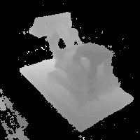
.
.
END